1.系统的登录。
双击桌面上的图标IE浏览器，在地址栏里输入网址名称，名称为http://soa.yundasys.com:20088/ydsoa/cas.login?CASLOGOUT=true 打开页面后进入登录页面。

注：验证码看不清，可点击验证码更新
2.系统首页

注：界面分四个区域
3.系统菜单―我的流程
在系统菜单我的流程里统一对流程进行操作：操作功能包括有【发起流程】，【查询流程】，【我发起过的流程】，【待办流程】，【已办事宜】，【工作流客户端】。
如图：

4.点击【发起流程】，会出现如下界面，然后选取――【任免流程】
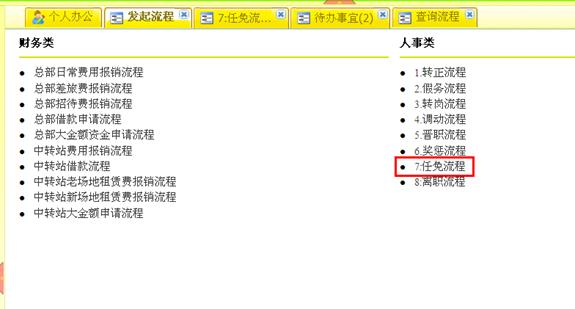
5.然后会进入标准表单界面
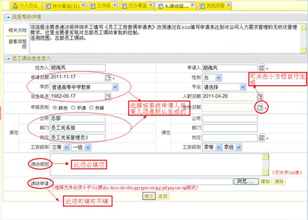
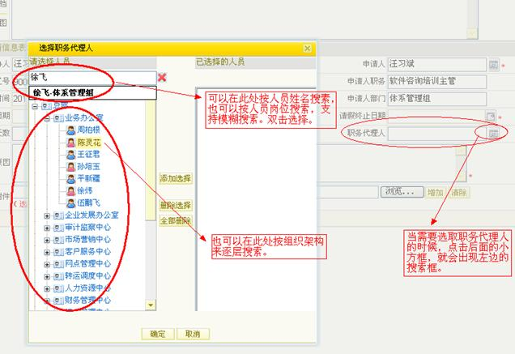
注意看一下，这是张标准填写的表单 。红色字代表范围限制， *表示必填项 ， 表示选择日期 ，表示选择组织架构人员或岗位
6.表单填好后，点击提交保存或提交，会自动跳转到如下界面。
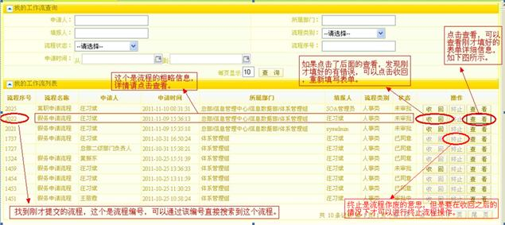
7.点击我的流程菜单―我发起过的流程，如下图：
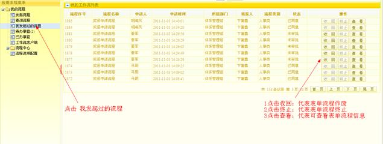
8.流程信息查看页面
（1）流程详细信息，如图
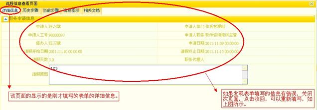
（2）流程历史步骤，如图
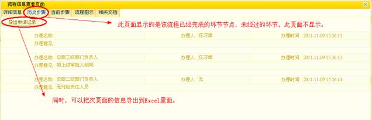
（3）流程当前步骤，如图
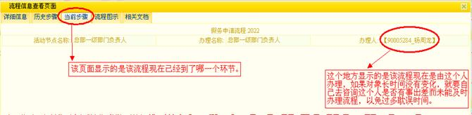
（4）流程图示，如下图
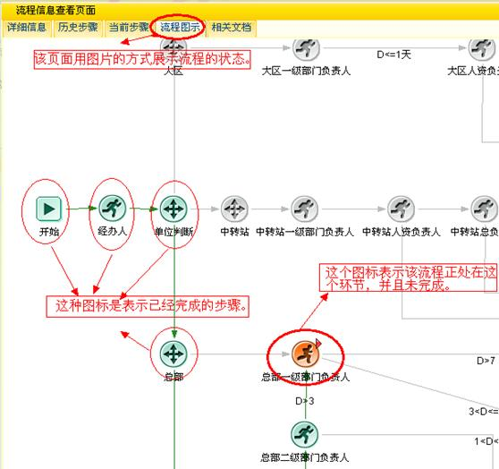
9.回到流程主页面，选取【我发起过的流程】，可以很直观的查看历史流程是否已完成。
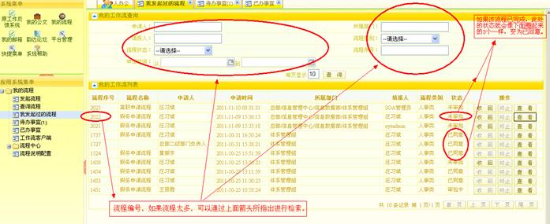
10.对于已经完成的流程，查看的状态显示,如下图所示。
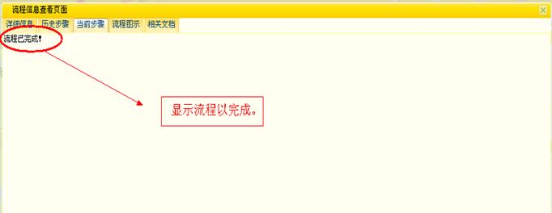
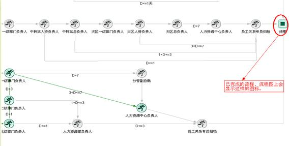